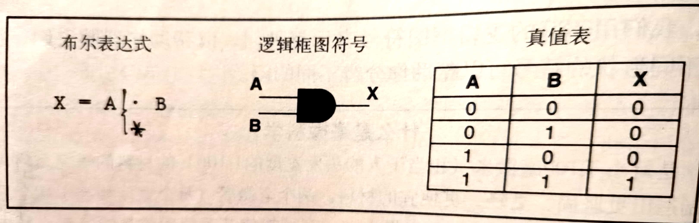

门与电路
计算机是电子设备，它的大多数基础硬件元件控制着电流。在非常原始的意识中，人类能够通过复杂的技术利用电流的能量，再加上我们的意志，就能够进行计算，做出决定。
任何电信号都有电压电平。我们根据信号的电压电平区分信号的值（0/1）。一般来说，0~2伏的电压电平是低电压，由数字0表示。2~5伏范围内的信号是高电压，由数字1表示。计算机中的信号被限制在这两个范围之内。
门是对电信号执行基本运算的设备。一个门接受一个或多个输入信号时，生成一个输出信号。电路是由们组合而成，可以用来执行算术运算和存储值。描述门的电路表示方法有三种，它们互不相同，但却一样有效:
·布尔表达式：表示二值逻辑函数的数学表示法
·逻辑框图：电路的图形化表示
·真值表：列出了所有可能的输入值和相关输出值的表
1.门
计算机中的门有时又叫做逻辑门，因为每个门都执行一种逻辑函数。每个门接收一个或多个输入值，生成一个输出值。由于我们处理的是二进制信息，所以每个输入和输出值都只能是0（对应低电压）或1（对应高电压）。门的类型和输入值决定了输出值

2.门的构造
前面我们提到过晶体管的发明改变了科技的面貌，开窗了计算机硬件的第二个时代。在晶体管之前，数字电路使用的是真空管，这种设备会大量发热，而且经常出现故障，需要更换。而晶体管比真空管小得多，而且运行所需的能量也少。它可以在几纳秒间切换自己的状态。
门使用晶体管建立输入值和输出值之间的映射。晶体管的角色有两种：一是传导电流的电线，二是阻止电流的电阻器。输入信号的电压电平决定了晶体管的角色。
晶体管具有三个接线端，即源极、基极和发射极，发射极通常被连接到地线。在计算机中，源极制造的是高电压。基极值控制的门决定了是否把源极接地。如果源极信号接地了，它将会被降低到0伏。如果基极没有是源极信号接地，源极信号依然是高电压。
通常，源极连线上都有一条输出连线。如果源极信号被接地了，那么输出信号是低电压，表示二进制数字0。如果源极信号仍为高电压，那么输出信号也是高电压，表示二进制数字1。
晶体管只能是开（生成高电压输出）或关（生成低电压输出）两种状态，由基极电信号决定。如果基极信号是高电压，源极信号仍然是高电压，从而关闭了晶体管。如果基极信号是低电压，则源极信号仍然是高电压，晶体管将要被打开。
现在，让我们看看如何用晶体管制造各种类型的门。
3.电路
既然我们已经知道单独的门是如何运作的，以及它们的真正构造，那么让我们来看看如何把门组合成电路。
电路可以分为两大类。一类是组合电路，输入值明确了输出值。另一类是时序电路，它的输出是输入值和电路现有状态的函数。
和门一样，我们能用三种方法描述整个电路的运作，即布尔表达式、逻辑框图和真值表，它们是不同的表示法，但却同样有效。
4.集成电路（IC）
集成电路是嵌入了多个门的硅片，例如CPU。集成电路是根据它们包含的门数分类的。这些分类也反映了IC技术的发展史。